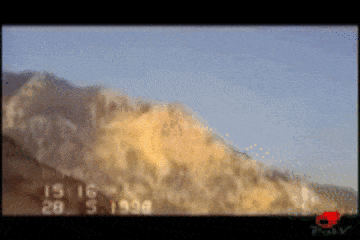

MOUNTAIN
This is Chura waro. Bahria has now renamed this area Ali villa, where it is selling 125 sq yards residential plots ‘in the heart of Bahria Town'. This was a high mountain. People would visit this peak often, to view the surrounding landscape, to enjoy the view. Because of its height it was called chura waro.
They leveled the mountain but they kept some of its hills. On the highest hill he built his own home with Italian granite and bulletproof windows. On other hilltops, luxury housing: Ali Villa and Bahria Heights. Who doesn’t love to see the city from above?
MAP
(image of 2013 map dancing a la www.yorku.ca/caitlin/waves/warned.html)They drew a map of the city from above. A fragmented city seen through borders and lines, red zones and no-go zones. Flattened and enclosed in a map, the city was still and silent. A corpse of a city.The city, cut up and cross-sectioned. This is called the Karachi operation.
CITY
There were years when Gadap was in Karachi and years when Gadap was outside Karachi. The city was marked by unruly lines. But whichever side of the lines Gadap fell on, it was always a blank space on the map. Some years the outlines of the city were faint, fluid, full of holes, and other years they were thick, dark, hard. One day the blank space turned red. Gadap was absorbed into the city only to be named a no-go zone. Banjar, ghairabad, ghairmehfooz.
NO-GO_ZONE
Banjar, ghairabad, ghairmehfooz – the no-go zone. Why no go? Where did Gadap go? Did the city consume it? Cross-sectioned and distributed it. Drank its rivers and ate its silt. There is the violence of disappearances and encounters, and the violence of ecological devastation. Military violence and material violence. Spectacular violence and slow violence. All is invisible in the no go zone. Why no go? Because the terrorists are there. Because there is no water there. Because the innocent and the nameless die there. There is no one there. Because there are uniforms there. Because nothing grows there. Because they built a wall there. Because bodies disappear, disintegrate, dry up there. Because a mountain turned to dust there.
BORDER
In the militarized/militarizing city borders are everywhere and nowhere. You will never know when you may have crossed a border or a border may have crossed you. The borders accumulate and proliferate, securitisation with surprise. Every day: a new no go, a new checkpoint, a new disappearance - of a body or a village, a new topography, a new outline.
‘To survive the borderlands’ says Gloria Anzaldua ‘you must live sin fronteras/ be a crossroads’
Be a crossroads. Gadap. Gad means point of intersection/connection. Aap means water.
WATER
Bahria also means water. Here, not as a point of connection, but as a site for occupation and a medium of expansion.